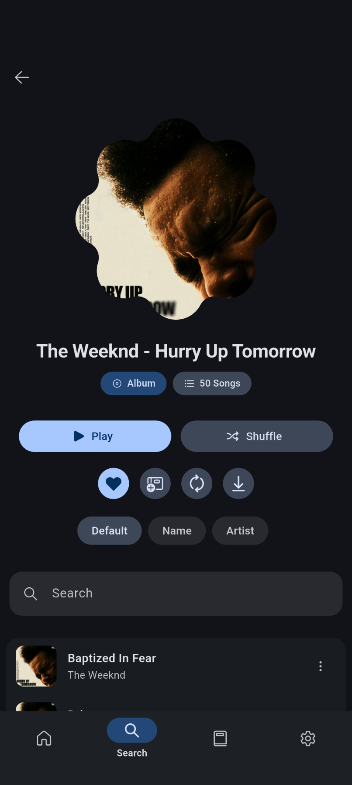

Musify 换机实战：从导出到恢复，五分钟把歌单和收藏全部搬过去
换新手机或重装系统时，Musify 的数据迁移其实不复杂——先导出、再装、最后导入，歌单和收藏就能原样回来。本文带着你一步步走完这个流程，并处理装不上、导不进的常见问题。
换了新手机，第一件事就是把常用的应用装回去。Musify 作为一个开源的随身播放器，它的官网上就能看到完整介绍，歌单、收藏列表、偏好设置全在里面——如果重开一个号从零攒起，那感觉跟丢了半条命差不多。好消息是 Musify 自带完整的数据导出和导入功能，整个过程五分钟能搞定，不用手动复制文件，也不需要任何云服务。
这篇教程结束时你能做到：旧手机导出一份完整的数据包，新手机装上后导入恢复所有歌单和收藏，连之前下载的离线歌曲也能重新拉下来。
准备工作
在动手之前确认三件事：
- 旧手机上的 Musify 是你一直用的那个渠道版本（GitHub 发布版或 F-Droid 版，两个渠道互相不能覆盖安装，后面会讲怎么区分）
- 新手机系统版本至少是 Android 7.0 及以上
- 两个手机之间有传输方式——网盘、蓝牙、数据线都行，选一个你最顺手的
第一步：旧手机导出数据
先别急着卸载旧手机上的 Musify，数据导出这个动作必须在应用还正常运行的时候做。
打开 Musify，进设置，找到"数据"或"备份"分组，点"导出数据"。应用会弹出一个文件保存对话框，让你选导出文件的存放位置。建议直接存到手机内部存储的根目录，或者你能轻松找到的位置——等下要把这个文件传到新手机上，存太深的子目录容易找不到。
导出的文件不大，通常几 MB 到几十 MB 不等（取决于你歌单和收藏的条目数量），它不包含离线下载的歌曲文件，只包含歌单元数据、收藏列表、播放历史和偏好设置这些"索引"信息。所以导出很快，几秒钟就能完成。

导出完成后，去文件管理器里确认一下那个文件确实在、大小正常、不是空文件。这个文件就是你整个 Musify 身份的化身，丢了就真要从零开始了。
第二步：把导出文件传到新手机
选一种方便的方式：
- 用网盘客户端上传到云端，新手机再下载
- 蓝牙直接传
- USB 数据线连电脑中转
- 旧手机开个临时文件共享服务，新手机通过局域网拉取
传输前确认文件没有被聊天应用自动压缩或重命名——有些 IM 工具传文件时会改扩展名或加后缀，Musify 导入时会校验文件格式，不对就拒绝。传输完在新手机的文件管理器里找到它，记好路径。
第三步：新手机安装 Musify
这里有个新手最容易踩的坑：Musify 同时在 GitHub 和 F-Droid 两个渠道发布，两个渠道的包名和签名完全不同。如果你从一个渠道装过，后来又想装另一个渠道的版本，安卓系统会直接拒绝——包名或签名对不上就不让覆盖安装。
所以装之前先想清楚你要装哪个渠道的版本，选定了就一直用，别换来换去。如果你之前没装过，随便选哪个都行——安装包从musify下载拿就行；如果之前装过别的渠道，就得先卸载干净再装新版本。
安装时如果弹出"应用未安装"提示，十有八九是这个原因。解决办法很简单：进系统设置的应用管理，把已有的 Musify 彻底卸掉，确认应用列表里已经没有了，再装你想要的那个版本。

第四步：新手机导入数据
新手机上装好 Musify 后先别点开，先去把刚才传过来的导出文件确认一下在手机上能找到。然后打开 Musify，进设置，找到"数据"或"备份"分组，点"导入数据"。
文件管理器会弹出来让你选文件，找到刚才那份导出文件，点它。Musify 会先校验文件格式和版本兼容性——校验通过就开始导入，几秒钟后歌单、收藏、播放历史、偏好设置全部恢复到新手机上，跟旧手机上一模一样。
这里注意一个容易忽略的细节：导入完成只恢复了"索引"数据，离线下载的歌曲文件并不会自动过来。因为导出时没包含这些音频文件。所以导入完歌单和收藏都回来了，点开播放可能会提示需要网络。别急，这是正常的。
第五步：重新下载离线歌曲
导入完数据，打开恢复好的歌单或收藏列表，找到你之前离线过的歌曲。可以逐首长按点下载，也可以长按整张歌单选"下载全部"。下载队列会按顺序把每首歌拉下来，跟旧手机上最初下载的流程一样。
这个过程需要等一会儿——取决于你有多少首离线歌曲和网络速度。下载期间可以正常使用播放器，不用盯着进度条。
常见卡点
卡点一：导入时提示文件选错了或版本不兼容
先确认你选的文件确实是 Musify 导出的那个，不是被改了扩展名或压缩过的。如果文件没问题，那大概率是导出和导入用的 Musify 版本跨了大版本——比如旧手机用 v3 导出，新手机装了 v4。这种情况下用旧手机导出时的同一大版本导入最稳，或者去musify文档查一下版本兼容表再操作。
卡点二：新手机装不上，一直提示"应用未安装"
90% 的情况是旧手机上还有另一个渠道的 Musify 没卸干净。进系统设置的应用管理搜一下"musify"，确认所有相关条目都卸载了。如果卸载后桌面还有残留图标，长按手动删一次。卸干净再装就行。
卡点三：导出文件在传输过程中损坏
用某些聊天应用传文件时，应用可能会自动压缩或转码，导致文件损坏。换个传输方式——数据线直连、网盘客户端上传下载、局域网文件共享，这些都不会动文件本身。
进阶一句话
数据迁移搞定后，可以试试开一下 SponsorBlock 功能——如果你的歌单里有播客或带插播的音频节目，它能自动跳过赞助推广、片头片尾和互动请求段落，省不少时间。
现在你的 Musify 已经在新手机上完整恢复了，歌单、收藏、收听历史全都在，离线歌曲也在重新下载。整个流程其实没有特别高深的操作，关键是第一步导出要在旧应用还能正常用的时候做——等应用崩了或卸载了再想起来，可就没处找了。
作为一个开源项目，Musify 的完整资料分别托管在三个仓库里，方便不同网络环境下查阅：GitHub 是主仓库，Gitee 和 GitCode 是面向国内用户的备份镜像。